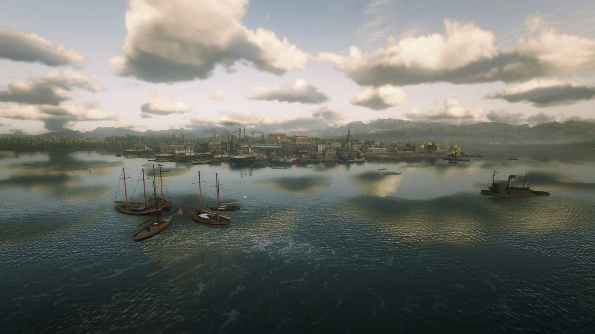
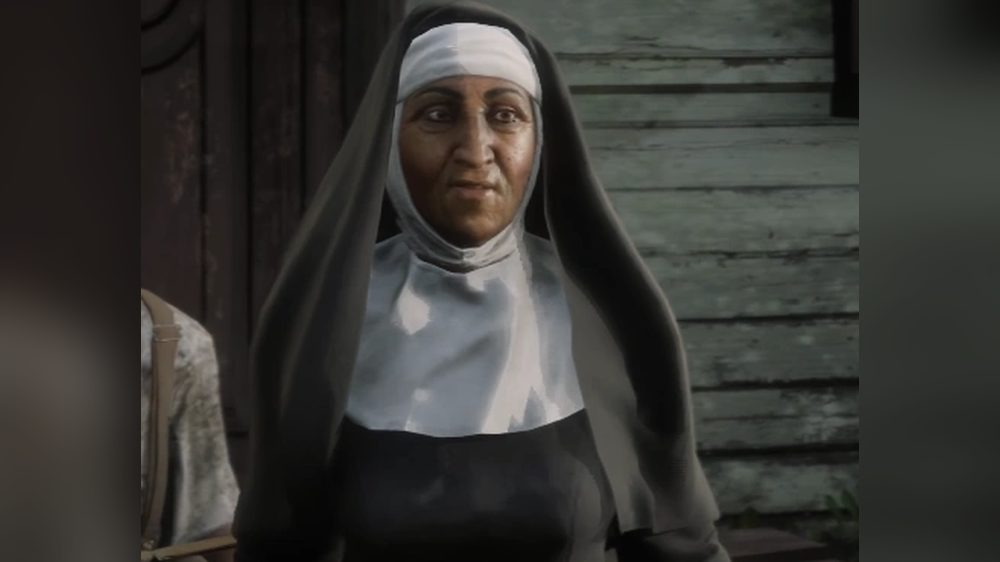
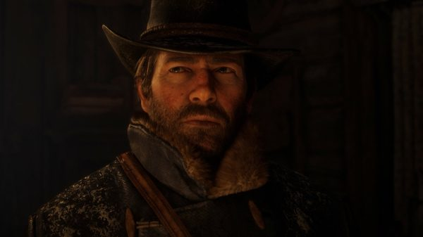
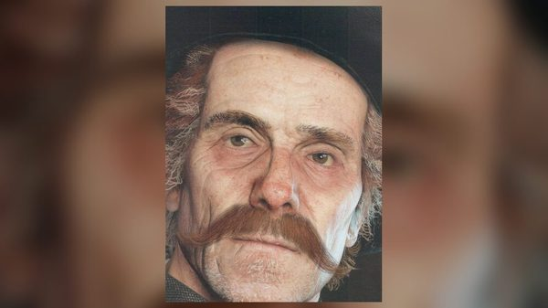
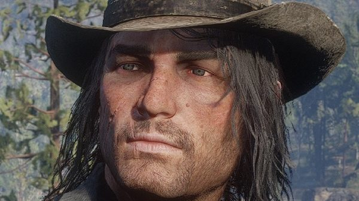
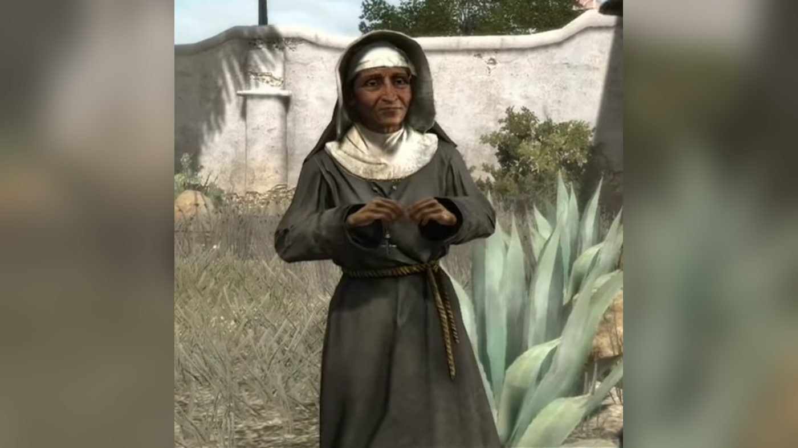

Character · Saint Denis
Sister Calderón
Sister Calderón is a Catholic nun at the Church of the Holy Blessed Virgin in Saint Denis, in Red Dead Redemption 2. No first name is given for her in either game.
She meets Arthur Morgan several times in 1899. In Red Dead Redemption, set in 1911, she is the Mother Superior of a convent in Mexico.
- Role
- Nun, later Mother Superior
- Church
- Church of the Holy Blessed Virgin, Saint Denis
- In 1911
- Las Hermanas convent, Nuevo Paraiso
- Status
- Alive in 1911
- Games
- Red Dead Redemption, Red Dead Redemption 2
Biography
Brothers and Sisters, One and All
In the Stranger mission "Brothers and Sisters, One and All", Brother Dorkins introduces Sister Calderón to Arthur while they teach street children to read. A boy steals her crucifix. Arthur gets it back and returns it to her at the cathedral.
Of Men and Angels
In "Of Men and Angels", she is collecting money and food for the poor outside the cathedral. Arthur gives either food or 10 dollars. She tells him that she was once like him; he replies that he is not a religious man. The mission is optional and must be completed before "The Fine Art of Conversation".
Emerald Station
At the end of "The Fine Art of Conversation", in chapter 6, Arthur has a coughing fit at Emerald Station. Sister Calderón is there, boarding a train for Mexico, where she says she has been sent on a mission.
Arthur tells her that he is dying and that he is afraid. She answers: "Take a gamble that love exists, and do a loving act." The scene requires high honor and the completion of "Of Men and Angels"; otherwise Reverend Swanson appears in her place. With high honor, her words can come back to Arthur during the final mission.
Relationships

Arthur Morgan
Confides in her that he is dying, at Emerald Station.

Orville Swanson
Takes her place at the station if Arthur's honor is low.

John Marston
Meets her at Las Hermanas in 1911.
In Red Dead Redemption
In 1911, she is the Mother Superior of the convent at Las Hermanas, in the Perdido region of Nuevo Paraiso. John Marston can meet her there while she collects money for the poor, and choose to give or to rob her. She also appears in Undead Nightmare (2010), an expansion outside the series' canon.
Behind the scenes
Sister Calderón is voiced by Irene DeBari in Red Dead Redemption 2.
Gallery
